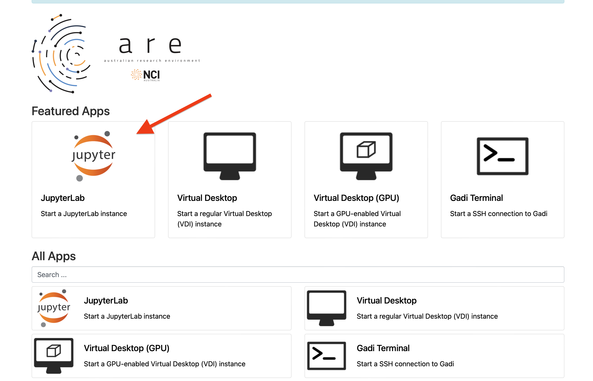
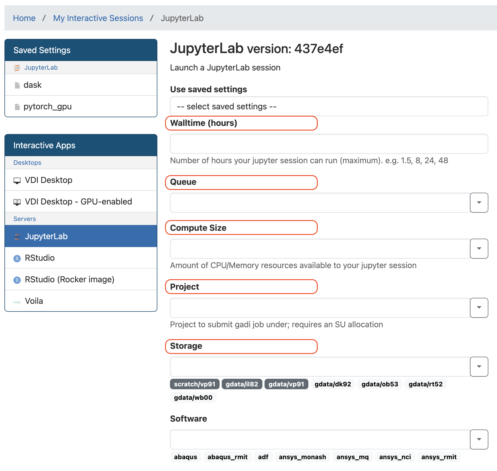
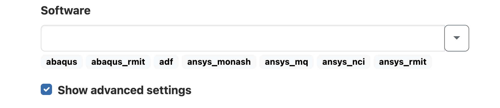
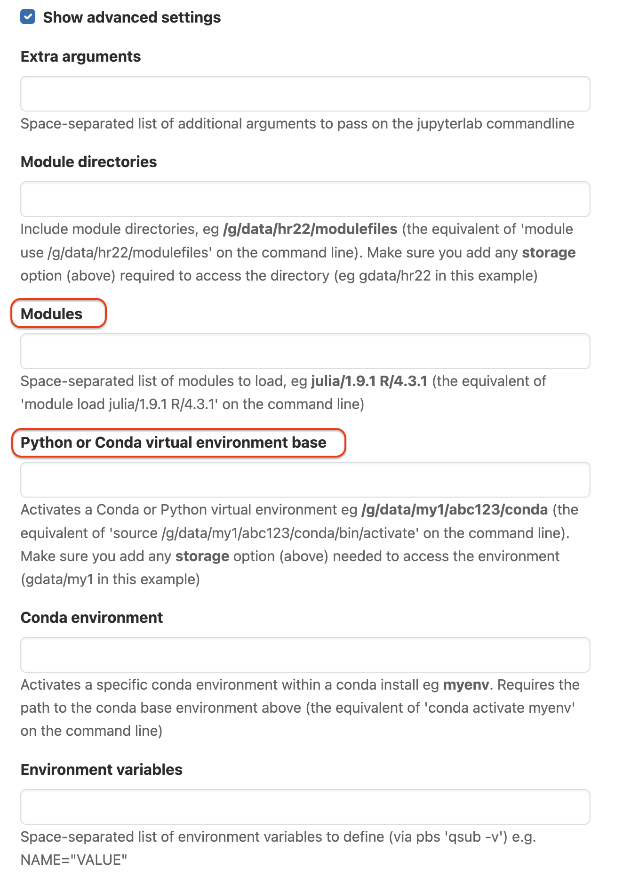
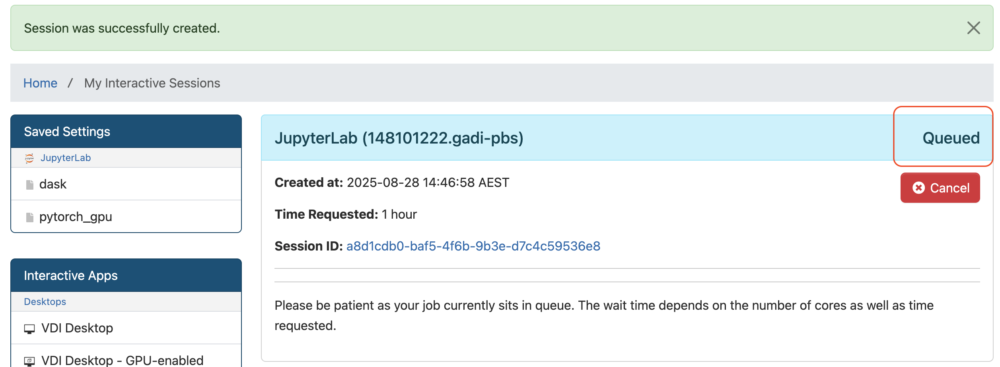
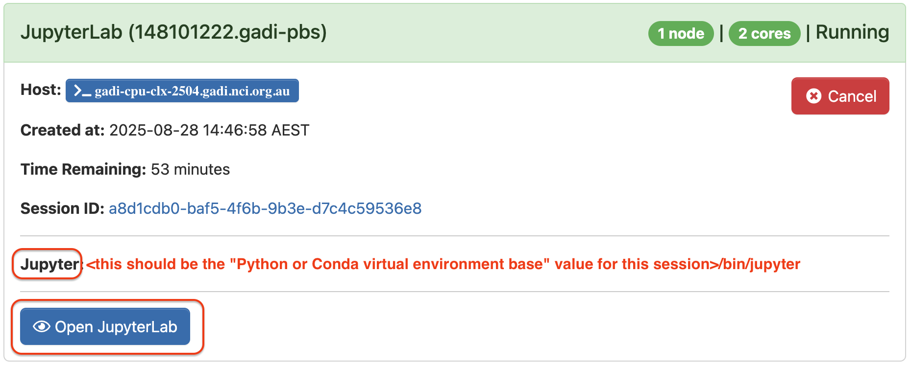
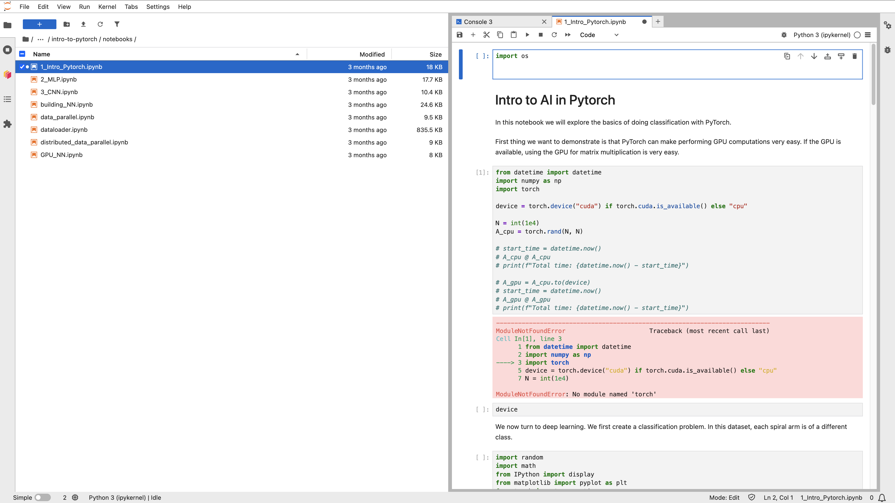
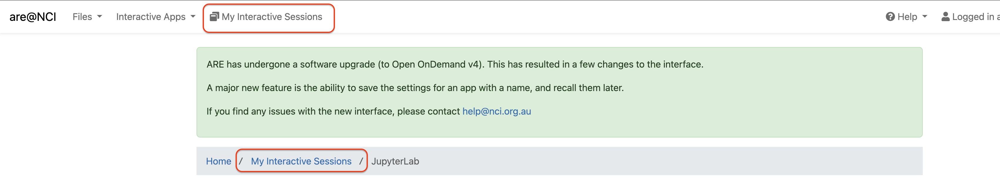
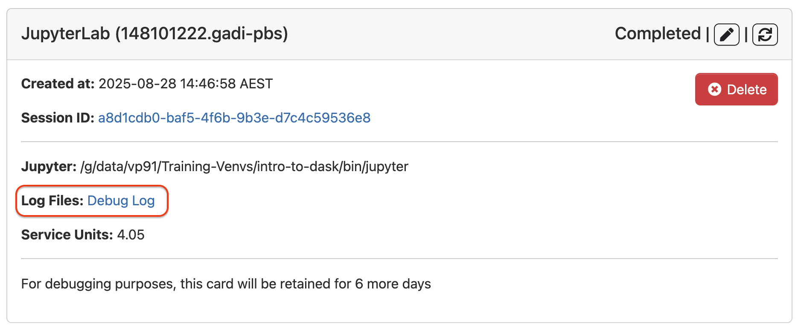

title: “Use JupyterLab on Gadi”
Before the Day - Cluster Access
- Create an NCI account using institution email
- Join below NCI projects
- vp91:NCI Training Project # Launch JupyterLab Session on ARE
Login to ARE
Open https://are.nci.org.au in a new tab, and log in with your NCI account, NOT email. You will see a dashboard page as shown after login. Each App will be run as an interactive session/job connected to Gadi. In this tutorial we will start a JupyterLab session. 
New JupyterLab Session
Click on the JupyterLab tile from the Dashboard, this will open the setting page for a new Jupyter session. We will fill in circled fields next.

Basic Settings
Setting form has free text input boxes. So we can copy the exact text values below and paste over to the form.
Walltime (hours) 3
Queue normal
Compute Size small
Project vp91
Storage gdata/vp91+scratch/vp91

Input boxes can also be used as dropdown selection. If you need to use different NCI projects when working on your project you might find the dropdown function helpful.
Advanced Settings
Click on Show advanced settings at the end of page. This will expand the form with extra fields.  We will fill in selected fields with these values: Some field names are similar, check the field names you are editing are correct.
Modules python3/3.11.0 cuda/12.8.0
Python or Conda virtual environment base /scratch/data/vp91/Training-Venvs/intro-to-dask

Launch Session
Make sure the setting fields and values are filled correctly, and then click on the Launch button at the bottom of the setting page.
Now you will see the green Session was successfully created message at the top, and Queued status is shown on the right side of the JupyterLab session block as shown below. Wait for the session to start. The wait time depends on the number of cores as well as time requested. 
Open JupyterLab
Once the requested resources are allocated, the session will start and the status will change to Running. The Jupyter path should start with the virtual environment base value used in settings, then point to /bin/jupyter.  Confirm the Jupyter path of your session is correct, and click on Open JupyterLab. This will open a new browser tab with JupyterLab interface. 
Congratulations, you are all set for the workshop!
ARE FAQs
Unable to Log In
Error:Bad Request: Requested resource does not exist.
Possible Cause: This error is often caused by issues with browser cookies or cache.
Solution: Open another tab and log in again, or try using incognito mode.
Error:We are sorry, but something went wrong.
Possible Cause: Exceeding the /home file system quota on Gadi.
Diagnosis: You will be able to confirm this by executing the quota -s command on Gadi’s login node. If this is the case, see the usage of Gadi’s HOME using the du -h --max-depth=1 ~ command.
Solution: Deleting/moving files from your Gadi’s HOME directory to keep the usage below the quota.
Error:Web application could not be started by the Phusion Passenger(R) application server...
Possible Cause: Exceeding the /home file system quota on Gadi.
Diagnosis: You will be able to confirm this by executing the quota -s command on Gadi’s login node. If this is the case, see the usage of Gadi’s HOME using the du -h --max-depth=1 ~ command.
Solution: Deleting/moving files from your Gadi’s HOME directory to keep the usage below the quota.
Error:Web application could not be started by the Phusion Passenger(R) application server...
Possible Cause: Exceeding the /home file system quota on Gadi.
Diagnosis: You will be able to confirm this by executing the quota -s command on Gadi’s login node. If this is the case, see the usage of Gadi’s HOME using the du -h --max-depth=1 ~ command.
Solution: Deleting/moving files from your Gadi’s HOME directory to keep the usage below the quota.
## Unable to Launch Session Error: qsub: Error: You are not a member of project vp91. You must be a member of a project to submit a job under that project.
Possible Cause: You are not a member of the project used, or if you recently joined the project and system is syncing account status.
Solution: Wait for 20 minutes and try again.
Error: Failed to submit session with the following error: usage: qsub [-a date_time]… If this job failed to submit because of an invalid job name please ask your administrator to configure OnDemand to set the environment variable OOD_JOB_NAME_ILLEGAL_CHARS.
Possible Cause: Special characters are submitted into the setting form.
Solution: Check the setting page values or manually type the values into the form.
Error:Disk quota exceeded @ dir_s_mkdir - /home/<institution_code>/<username>/ondemand/data/sys/dashboard/batch_connect/sys/desktop_vnc/ncigadi/output/<session_ID>
Possible Cause: Exceeding the /home file system quota on Gadi.
Diagnosis: You will be able to confirm this by executing the quota -s command on Gadi’s login node. If this is the case, see the usage of Gadi’s HOME using the du -h --max-depth=1 ~ command.
Solution: Deleting/moving files from your Gadi’s HOME directory to keep the usage below the quota.
Error: unix listener: cannot bind to path /home/<institution_code>/<username>/.ssh/<session_ID>: No such file or directory. Your connection to the remote server has been terminated. Possible Cause: SSH folder is not properly setup in your account. Diagnosis: You will be able to confirm this by executing the ls -lah ~ command on Gadi’s login node. If there is no .ssh in the output or the folder permission is not correct, follow below steps to resolve the issue. Solution: 1. Login to Gadi terminal 2. Execute the following commands:
2. **mkdir -p ~/.ssh**
2. **chmod 700 ~/.ssh**Check Debug Log for Other Issues
If your issue is not solved above, please follow these instructions to check the session log or report the issue: 1. Go to my interactive sessions by clicking one of the buttons on the page: 
On the Session block, click Debug Log link  ## Report Issue to Helpdesk
Copy Debug Log link (if job is still running then use the Session id link).
Send a new email to help@nci.org.au, include:
- Subject: “ARE” and short description of issue
- Body:
- A more detailed issue description.
- Debug Log/Session id Link: The link you copied.
- Operating System: e.g. Windows 11, MacOSX 13, Debian Linux etc.
- Browser: e.g. Firefox 102, Chrome 103, Edge 103
- Connection: e.g. Wired network at ANU, Wireless at Home etc.
JupyterLab Usage
Interface
The JupyterLab workspace consists of a main work area containing tabs of documents and activities, a collapsible left sidebar, and a menu bar.
The left sidebar contains a file browser, the list of running kernels and terminals, the Dask extension of JupyterLab, Table of Contentions and Extension Manager. 
Running Notebook
Double-click on a notebook (.ipynb) file to open it in the main area. Selected cell is highlighted in blue. Run Selected Cell
Press: Shift + Enter or Click: the run button on toolbar
JupyterLab FAQs
Server Connection Error
Error:"Server Connection Error. A connection to the Jupyter server could not be established. JupyterLab will continue trying to reconnect. Check your network connection or Jupyter server configuration." Possible Cause: Reached requested job Walltime or exceeding requested JOBFS size. Diagnosis: You will be able to confirm this by checking session log file:$HOME/ondemand/data/sys/dashboard/batch_connect/sys/jupyter/ncigadi/output/<session_ID>/output.logon Gadi. Solution: Re-launching the JupyterLab session by either requesting more Walltime or JOBFS (available under the “Advanced options …”), based on the cause of the issue. ## Saving File Error
Error: "Unexpected error while saving file: … [Errno 13] Permission denied: '…' " Possible Cause: This error occurs when a file with the same name already exists and might be owned by another user. Diagnosis: Check the file directory on the left panel of JupyterLab page that you are saving the file in your own folder, not other users. Suggestion: Rename the file and try saving it again.